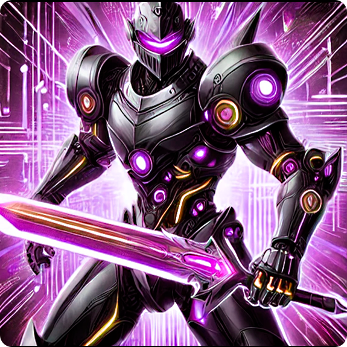

-
Cosmos Sentinel, The Galactic Guardian

This imposing cybernetic warrior is the embodiment of harmony between advanced technology and cosmic energy. Wielding the Stellar Scepter, Cosmos Sentinel can manipulate space-time, nullifying attacks and empowering allies.
ATK/ 2800 DEF/ 2500 -
Nebula Dragon, The Being Of The Eternal Stars

A mythical creature born from the fusion of nebulas and stellar energy. With its crystalline scales, Nebuladragon channels the power of the cosmos, devastating its enemies with bursts of pure energy. It is said to appear only in times of universal chaos, serving as a harbinger of renewal and celestial balance.
ATK/ 3200 DEF/ 2000 -
CyberBlade Paladin, The Digital Knight
Armed with the legendary Cyberblade, this cybernetic knight is a protector of the digital dimensions. With enhanced reflexes and an unwavering sense of justice, he battles invaders who threaten the balance of virtual and real worlds. His sword emits a technological glow that can cut through both physical matter and digital code.
ATK/ 2600 DEF/ 2300 -
Mechadragon X, The Biomechanical Destroyer

A deadly fusion of draconic biology and cybernetic engineering, Mechadragon X was created to be the ultimate weapon. With its energized wings and multiple power cores, it is capable of firing devastating blasts and neutralizing even the strongest opponents. Its presence on the battlefield is a harbinger of imminent destruction, known as the "End of Ages".
ATK/ 3500 DEF/ 3000 -
Archmage Stellarion, The Guardian Of The Stars

An enigmatic mage who manipulates the forces of the cosmos to protect the universal balance. Archmage Stellarion wields his Cosmic Scepter to channel star-light spells, capable of banishing enemies to distant dimensions or empowering allies with astral energy. His presence on the battlefield is shrouded in mystery and power, revered as the "Sage of Infinity".
ATK/ 2400 DEF/ 2600 -
Aegis Knight, The Guardian Of The Firmament

Wearing armor forged from fragments of stars, Aegis Knight is the ultimate defender of the dimensions. Wielding the Astral Sword and the Celestial Shield, he possesses the power to nullify enemy attacks and counter with strikes of pure cosmic energy. His oath is to protect the balance between light and darkness, being remembered as the "Fortress of the Cosmos".
ATK/ 3000 DEF/ 2800 -
Stormbringer Dragon, The Herald Of Storms

This mighty dragon rules the skies, summoning thunder and lightning with the beat of its wings. Stormbringer Dragon is the embodiment of nature's fury, destroying everything in its path with electrical blasts and razor-sharp winds. It is said that its appearance is the prelude to an endless storm, bringing destruction and renewal to the battlefield.
ATK/ 2900 DEF/ 2100